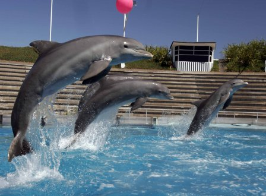

Aquarium Mar del Plata

28 Abril 2019
Mar del Plata
El Aquarium Mar del Plata es una de las principales ofertas recreativas de la ciudad de Mar del Plata. Es uno de los parques marinos más importantes de Argentina, con pingüinos, peces, mamíferos marinos, aves exóticas y autóctonas. Los visitantes disfrutan de los shows de delfines, leones marinos, aves y del cine/teatro del Mar. Además ofrece un recorrido educativo para aprender sobre nutrias, lémures, pingüinos y el centro de rehabilitación de Fauna Marina. Y actividades interactivas como: "Cuidador por un día", "Buceo con peces", "Encuentro con lobos marinos", "Encuentro con delfines" e "Inmersión con tiburones". También cuenta con un patio de comidas, pelotero,plaza blanda, juegos al aire libre y playa privada para los que quieren aprovechar del mar y la arena.
El Aquarium Mar del Plata es una de las principales ofertas recreativas de la ciudad de Mar del Plata. Es uno de los parques marinos más importantes de Argentina, con pingüinos, peces, mamíferos marinos, aves exóticas y autóctonas. Los visitantes disfrutan de los shows de delfines, leones marinos, aves y del cine/teatro del Mar. Además ofrece un recorrido educativo para aprender sobre nutrias, lémures, pingüinos y el centro de rehabilitación de Fauna Marina. Y actividades interactivas como: "Cuidador por un día", "Buceo con peces", "Encuentro con lobos marinos", "Encuentro con delfines" e "Inmersión con tiburones". También cuenta con un patio de comidas, pelotero,plaza blanda, juegos al aire libre y playa privada para los que quieren aprovechar del mar y la arena.
perm_identity
Cataratas del Iguazú
1º mayo 2019
Iguazú
Las majestuosas Cataratas del Iguazú se encuentran en el interior del Parque Nacional Iguazú, un área de preservación de la naturaleza que abarca 67.720 hectáreas en el extremo norte de la Provincia de Misiones, en la República Argentina. Se trata de un sistema de 275 saltos de agua en plena Selva Paranaense, ubicados a 17 kilómetros de la desembocadura del Río Iguazú en las aguas del Río Paraná, punto en el cual se encuentran las fronteras de Argentina, Brasil y Paraguay, y en el que se erigen las ciudades de Puerto Iguazú, en el lado argentino, Foz do Iguaçu en el lado brasileño y el conglomerado urbano Ciudad del Este/Presidente Franco, del lado paraguayo. Datos Curiosos:
Las Cataratas tienen un ancho de 2.7 kilómetros (o 1,7 millas). Su altura varía entre los 60 metros (200 pies) y 82 metros (o 269 pies) y su caudal de agua promedio es de 1.800 m³/s.
Una gran parte del agua de las Cataratas cae en la Garganta del Diablo- un largo abismo que es de 82 metros de altura, 150 metros de ancho y 700 metros de largo. Este abismo es en forma de “U”.
Dos tercios de las Cataratas del Iguazú están en el lado de Argentina.
Las Cataratas del Iguazú se formaron como resultado de una erupción volcánica.
Las Cataratas del Iguazú pueden ser vistas en muchas películas, incluyendo: “La Misión”, “Indiana Jones and the Kingdom of the Crystal Skull”, “Mr. Magoo”, “Miami Vice” y muchas más. Durante 2017 vinieron al Parque Nacional Iguazú 1.500.000 visitantes.
Las majestuosas Cataratas del Iguazú se encuentran en el interior del Parque Nacional Iguazú, un área de preservación de la naturaleza que abarca 67.720 hectáreas en el extremo norte de la Provincia de Misiones, en la República Argentina. Se trata de un sistema de 275 saltos de agua en plena Selva Paranaense, ubicados a 17 kilómetros de la desembocadura del Río Iguazú en las aguas del Río Paraná, punto en el cual se encuentran las fronteras de Argentina, Brasil y Paraguay, y en el que se erigen las ciudades de Puerto Iguazú, en el lado argentino, Foz do Iguaçu en el lado brasileño y el conglomerado urbano Ciudad del Este/Presidente Franco, del lado paraguayo. Datos Curiosos:
Las Cataratas tienen un ancho de 2.7 kilómetros (o 1,7 millas). Su altura varía entre los 60 metros (200 pies) y 82 metros (o 269 pies) y su caudal de agua promedio es de 1.800 m³/s.
Una gran parte del agua de las Cataratas cae en la Garganta del Diablo- un largo abismo que es de 82 metros de altura, 150 metros de ancho y 700 metros de largo. Este abismo es en forma de “U”.
Dos tercios de las Cataratas del Iguazú están en el lado de Argentina.
Las Cataratas del Iguazú se formaron como resultado de una erupción volcánica.
Las Cataratas del Iguazú pueden ser vistas en muchas películas, incluyendo: “La Misión”, “Indiana Jones and the Kingdom of the Crystal Skull”, “Mr. Magoo”, “Miami Vice” y muchas más. Durante 2017 vinieron al Parque Nacional Iguazú 1.500.000 visitantes.
perm_identity
Perfil del autor
José Francisco de San Martín y Matorras (Yapeyú, Virreinato del Río de la Plata; 25 de febrero de 1778-Boulogne-sur-Mer, 17 de agosto de 1850) fue un militar y político cuyas campañas revolucionarias fueron decisivas para las independencias de Argentina, Chile y Perú.